Hello There
Welcome! I'm Shoham Egozi, a dedicated DevOps Engineer with a deep-rooted passion for technology and a relentless drive for continuous learning and improvement. Beginning my career in Quality Assurance, I self-navigated the complex transition to DevOps through rigorous self-study and practical application, demonstrating a keen ability to adapt and master new technologies rapidly. My technical expertise is both wide-ranging and diverse, with particular expertise in Python, Groovy, Bash, and a strong command of automation tools and API testing environments such as Jenkins, Docker, Postman, and Selenium. I have effectively automated numerous manual processes, enhancing system reliability and team productivity, and have spearheaded major projects such as the integration of CI/CD pipelines and the seamless migration from Jira to Polarion,but I am also continuously expanding my skillset in web technologies including JavaScript, HTML, CSS, and the Playwright platform in my free time. This dedication to learning allows me to automate complex workflows and integrate sophisticated API solutions. My background as a Tank Commander has honed my leadership skills and resilience, enabling me to lead projects with precision and confidence.
At 29 years old, I've just begun a new chapter of my life by getting married this year, grounding my roots in a family tradition of discipline and resilience, attributes inherited from my early childhood on a military base where my parents served as army officers(which today are highschool teachers). Beyond my professional pursuits as a DevOps Engineer, I'm an avid sports enthusiast with a passion for football, swimming, running, gym, pilates and yoga, maintaining a dynamic and balanced lifestyle. Each morning, I dedicate time to meditation, which helps clear my mind and infuses me with positive energy and enhanced concentration for the day ahead. My personal interests don't stop at physical activities; I'm also deeply engrossed in the world of gaming, comics, and anime, which satisfy my geeky side and spark hours of engaging conversations and debates. When not gaming or catching up on the latest anime release, you can find me immersed in the latest movies and TV series, always eager to discuss and dissect the narratives and cinematography with friends and fellow fans. This blend of interests and activities not only keeps me energized and continually learning but also enriches my creativity and problem-solving skills in all areas of life.
If you’d like to get in touch, feel free to reach out through any of the following platforms:


 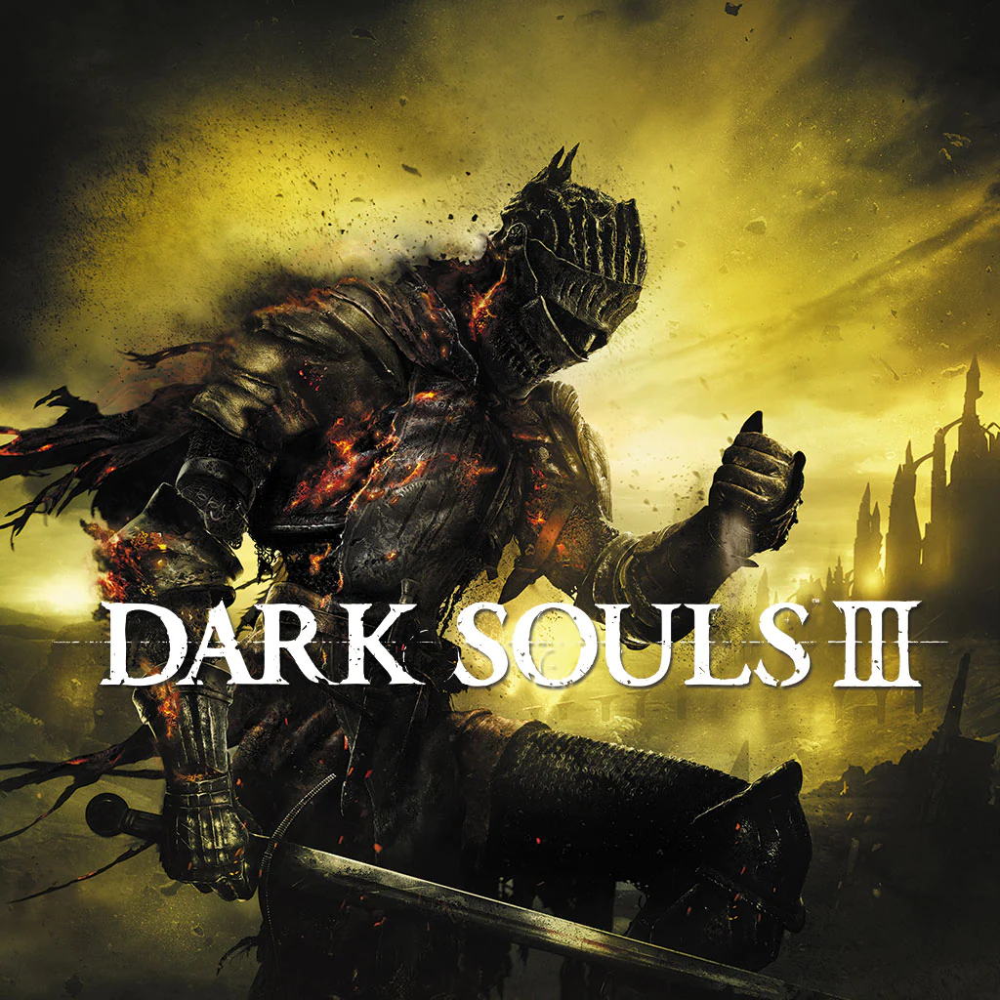
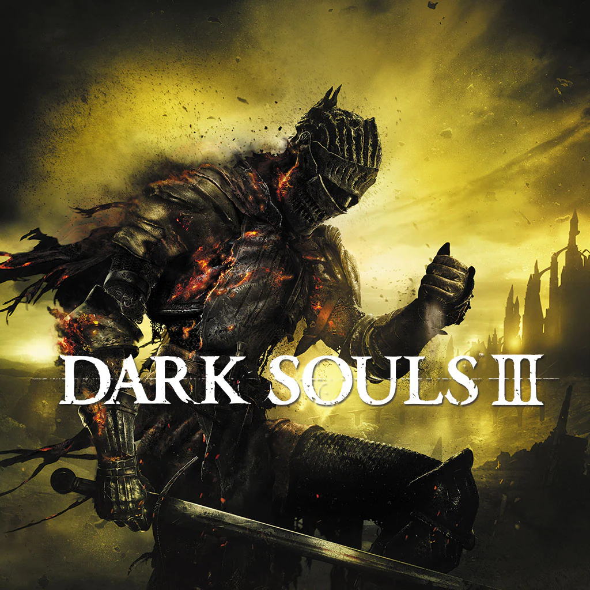

 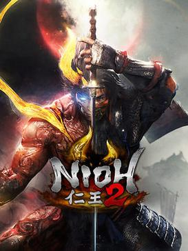
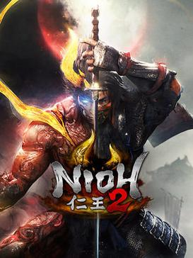

 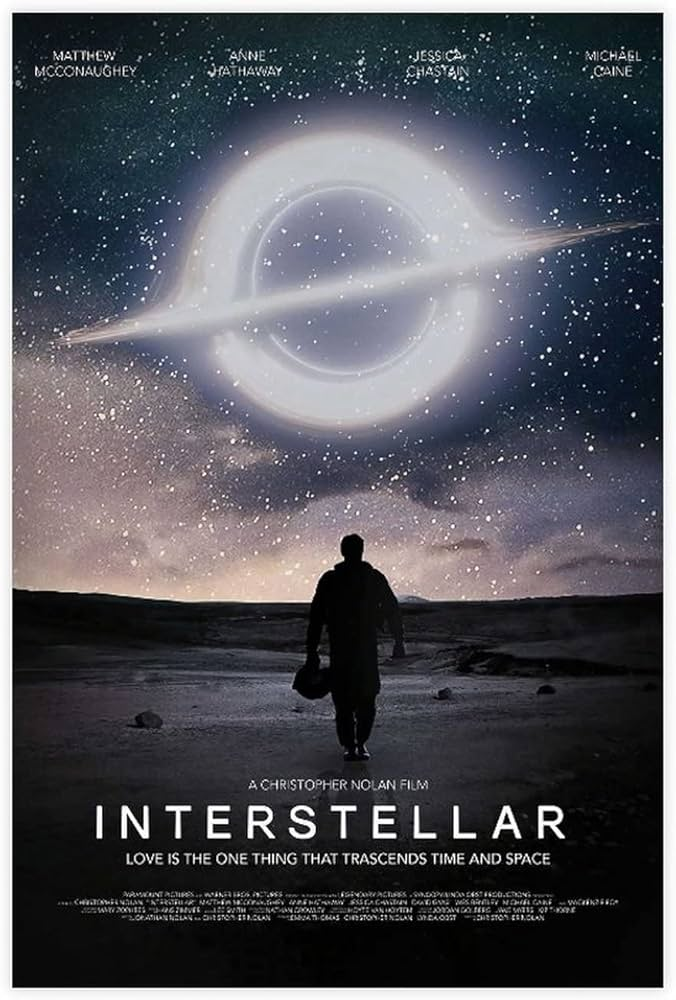
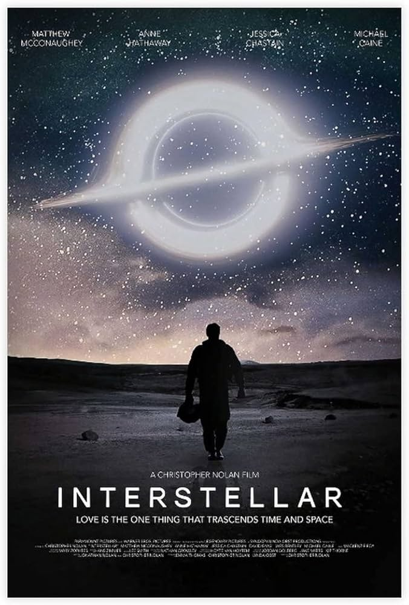
 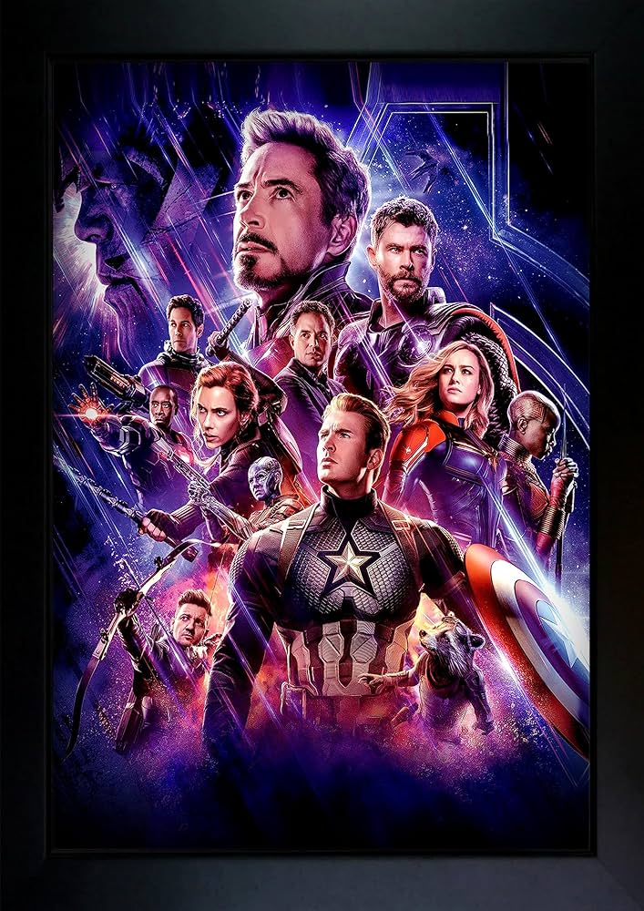
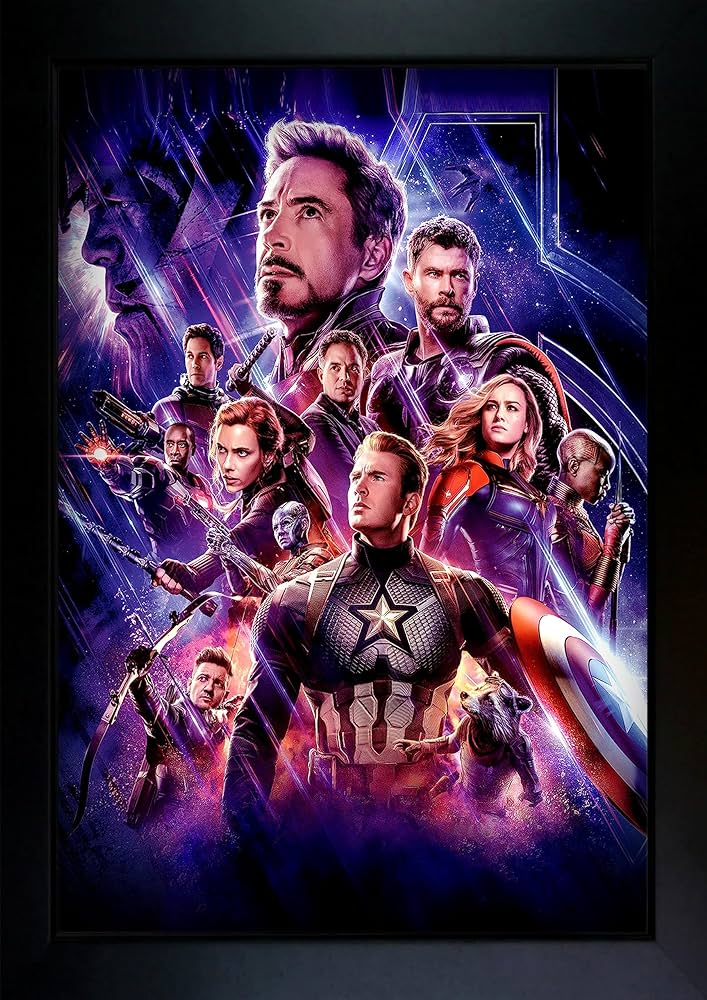


 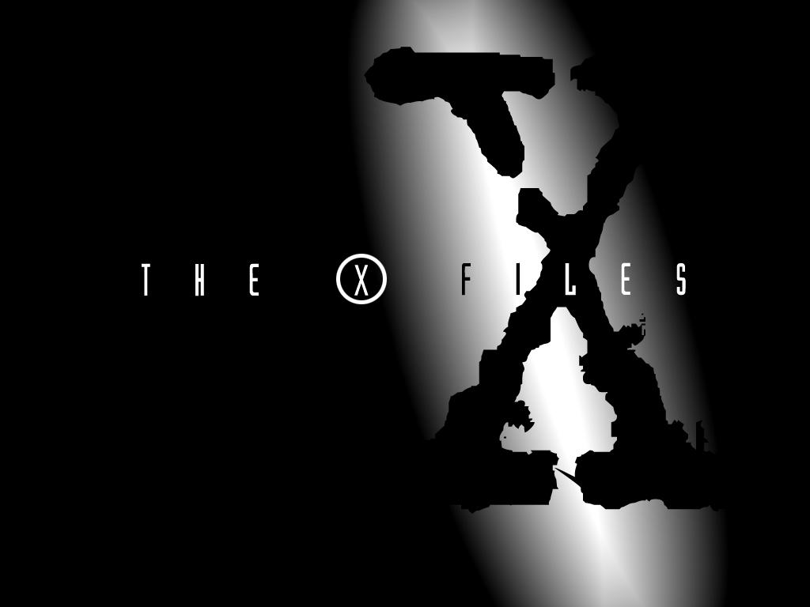
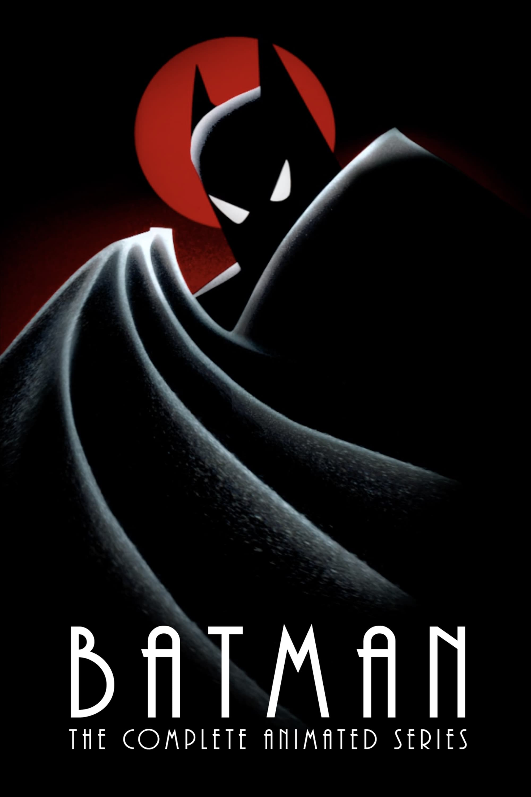
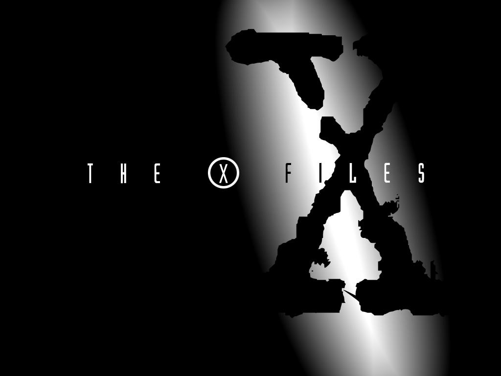
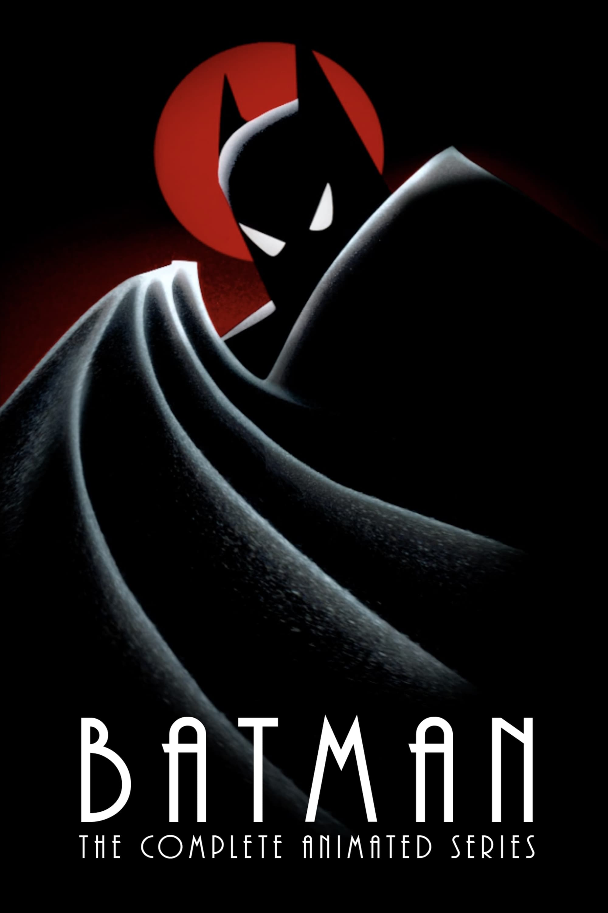